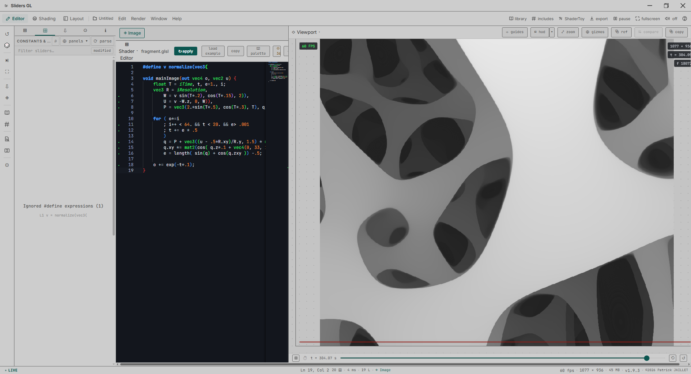
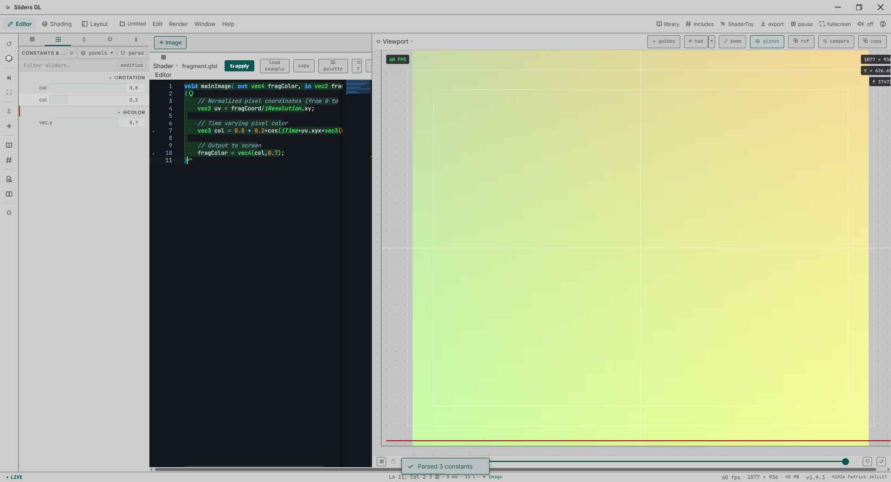
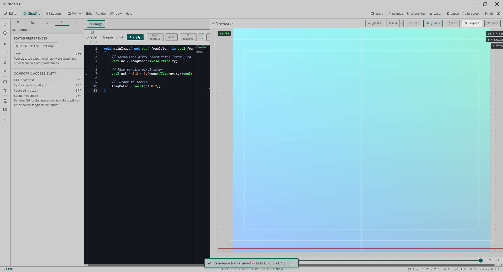
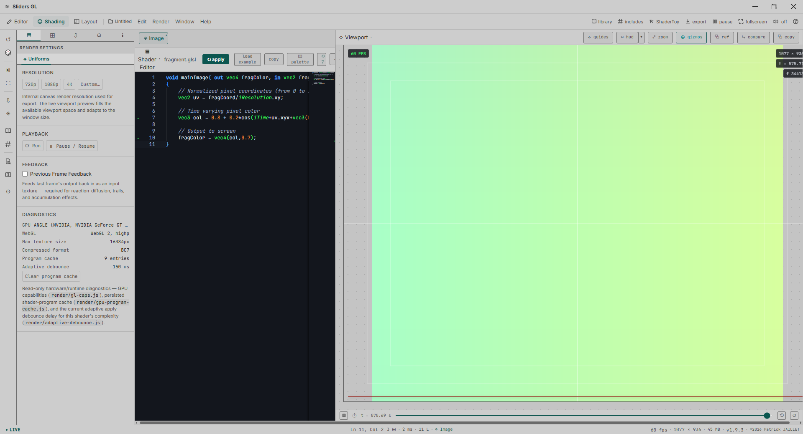

A Shadertoy-compatible GLSL shader editor with a Blender-style desktop UI. Ultra-precise sliders for every uniform, a Monaco-powered editor, and instant live preview — built for Windows, built to work offline.
Sliders GL turns every uniform in a GLSL shader into a precise, keyboard-accessible control — no more editing numbers by hand and re-compiling to see the result.
Click-drag scrubbing, fine/coarse step modifiers, per-channel vector and color controls, full keyboard access.
Syntax highlighting, inline diagnostics, autocomplete, and code formatting for GLSL, right inside the app.
mainImage, iResolution, iTime,
iMouse, channel uniforms — with direct import by ID or URL.
Frame and screenshot export, video recording, standalone HTML, and full project ZIP export.
Topbar, tool shelf, tabbed Properties, Outliner, draggable/ collapsible areas — a real desktop editor, not a wrapped webpage.
All runtimes, fonts, and tooling are bundled locally. Zero network dependency for core functionality.
A light, medium-gray workbench theme with a single teal accent — built to stay out of the way of the shader you're working on.




Free, native Windows desktop app. No installation of a runtime or browser required.
Windows 10 / Windows 11 · MIT licensed